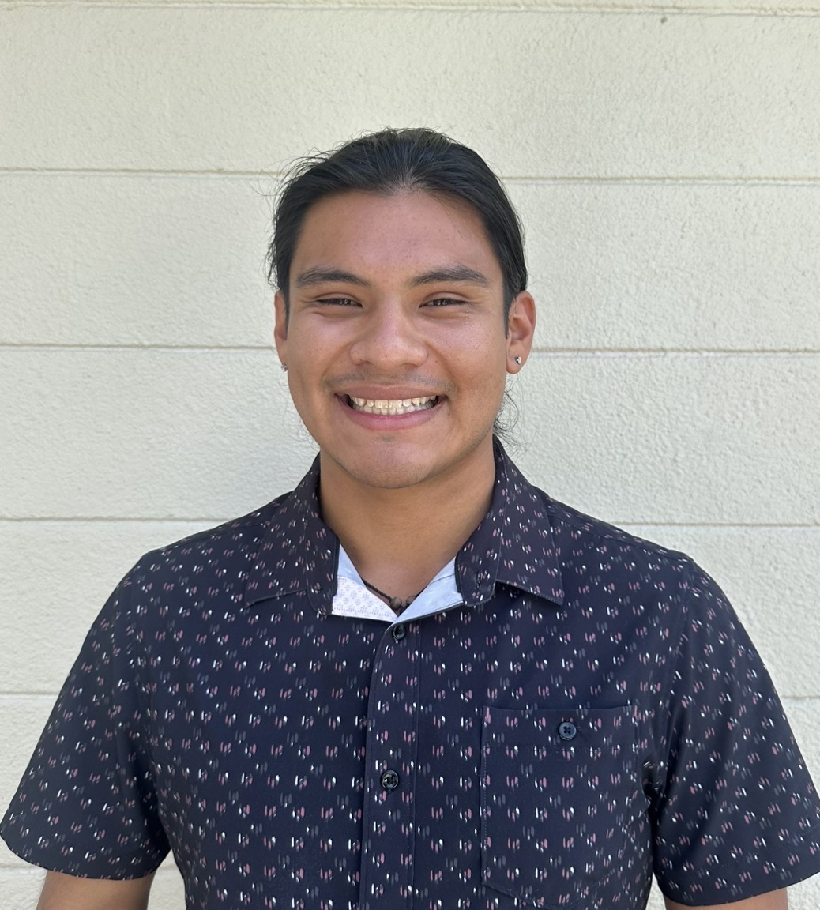

Dena
Design & Development
Dena designs and builds the websites, bringing together the structure, visuals, and details that make each site feel like a natural fit for the business behind it.
Meet the team
Saltwater started with two people who love building things, solving problems, and helping other people turn their ideas into something real. We decided to put those things together and build a studio of our own. We work closely with small business owners and make getting online feel a little more human.
Design & Development
Dena designs and builds the websites, bringing together the structure, visuals, and details that make each site feel like a natural fit for the business behind it.

Client Advisor
Randall gets to know the businesses we work with, answers questions, and helps connect clients with the services that make sense for them.